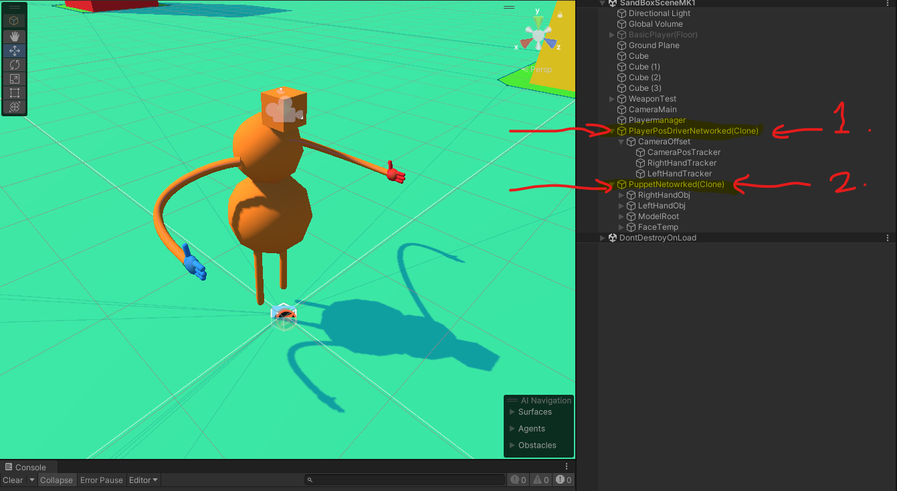
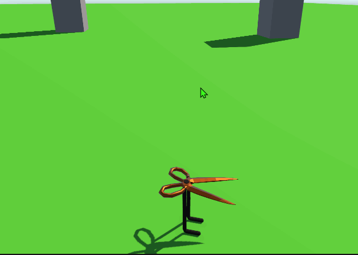

Download Version 0.4 here.
For the past two weeks I spent a lot of time reworking my previous code to function more fluidly with less set up. I also Worked on an enemy manager system that manages enemies within encounters. This will theoretically fix any issues with enemies targeting players they shouldn't. As of right now everything functions the same visually so I have nothing to show you, but by next week I should have more to show.
The past few weeks have felt a little slow because I've been doing a lot of research on how I want to handle the player connection and management system. But for all my research there hasn't been much visible progress on the project itself. So I'm going to show you some screenshots and and doodles of what I'm trying to do.
The first image shows the new system kind of working a little. What I'm doing here is spawning in a Pose Driver that will coordinate with the server to spawn in a puppet. This way I can have a character that is controlled through an abstracted source. So if I need to swap out the model itself or the pos driver I'll be able to do that.
In the second image is a doodle that demonstrates how I think this system will work. The top layer with the red and blue dots being the puppets and the bottom layer with the black human doodles being the pose drivers. The other colored lines are supposed to imply position data being passed around.
Doodle of the Networking Puppet Driver.
Puppter Driver in action!
My teammates and I wanted to take it a bit slower heading into the second month as we were reworking and fixing up many of Month 1's codebase to provide a better foundation for our future development!
One of the main things that I worked on this past week was a new Sandbox Lobby Scene that players can hop into to create their dungeons. The sandbox lobby will feature three main areas but has room for expansions later on.
There will be a common area where you can view unlocked weapons, host/join lobbies, and customize your character. A Generator Room where you can select the size of the Dungeon you want to procedurally generate. Lastly, a Tutorial room where players can test weapons against Target Models and manipulate their resistance values.

A tour of the revamped (not complete) Sandbox Lobby!
Download Version 0.3 here.
This week I worked on implementing a modular UI system into our project! This modular UI system involves some of Unity's Action/Event Systems so I can call an increment/decrement for the respective slider.
I also set up some of the Player Settings options with that modular UI system. For right now it just holds the Master, Music, and Sound Effects (SFX) Volume values.
Lastly, I set up a new Main Menu Scene for players to load into. There is an option for Singleplayer, Multiplayer, and of course Options within the Main Menu. Upon selecting Singleplayer/Multiplayer, the player is transported to the Sandbox Lobby scene where they can fight against some enemies or host a lobby!

The new main menu scene that players load into after the splash screen.

Some of the modular UI buttons I made for VR.
Download Version 0.2 here.
I did not do a lot of VR work, but I made a simple enemy that moves using a nav agent and nav mesh. I also used my group mate Tom's code in another project as reference for the attacks.
The enemies attack by having their weapon follow a predefined path made from a spline.
Video showcasing an enemy within the singleplayer level!
Since my last post I have gotten rooms to generate with individual cubs to make up a room similar to how a tileset would work
I have also began drawing lines between rooms which will eventually be used to path hallways I accomplished this using the Bowyer Watson algorithm which isn't working exactly properly at the moment but I'm hard at work to get it to comply. Hopefully by the end of this week it'll be functional and I can begin pathfinding the hallways!
A GIF of my current Procedural Generation progress! Showcasing meshing rooms.
As the player character programmer, I'm tasked to sync the player through the network. But as of now, it has proved to be harder than expected. The only other thing I've networked has been a really simple character, found in the gif to the right.

LAN Connection handshake with another client!
Scissor-Character Prototype project I have worked on.
This week I helped get a networked connection up between two clients over LAN! We connected the two clients via one editor instance and one build instance running using Netcode for Game Objects and following this tutorial for some starting points. With a LAN Connection setup, now I can start working on the fun stuff: passing data over that connection!
Aside from networking I also got a base UI setup working with a Restart/Quit menu for singleplayer and a multiplayer menu containing LAN or Online Host/Join options! One of the hurdles I had to cover this week with UI having the player being able to interact with it. That was solved by using a RayCast when the player pressed the right trigger on the UI. This also helped me to incorporate some feedback to the player with some hover and confirm sound effects.
One important thing we found when testing LAN was that two Unity editors cannot connect to LAN, at least one instance has to be from a build/packaged version of the project.

Joining a LAN Hosted Server as a client!

Shaking hands with the LAN Host!
Download Version 0.1 here.
This project is a VR dungeon crawling game that you can play with friends. I have been tasked with creating enemies and handling procedural animation.
Recently I've been working on learning procedural animations using this tutorial. I have succeeded in the math behind head tracking as well as eye tracking, and I've started working on understanding the math behind inverse kinematics.
My current progress on Procedural Animations!
I am working on the procedural generation of the dungeon for our project. I am tasked with implementing the Bowyer Watson algorithm to connect randomly placed rooms with both hallways and staircases
So far I am just placing rooms (currently just cubes of varying size) randomly and successfully got them to place without overlapping with each other. Next step is to establish the connections which will turn into our hallways!

Procedurally Generating different dungeon rooms!
I am the team lead as well as the player gameplay programmer. Here's what I've been doing on the project so far!
I've been working on setting up basic VR movement using a custom collide and slide algorithm for collision detection and movement. The gif shows the algorithm hitting the geometry and sliding the movement along the wall-normal. There is some dampening with the angle hitting the wall. That way, moving directly into a wall will fully cancel the movement.
The second image shows the player character that I made. The player character is hooked up with VR capabilities, the basic setup was to have player movement, hand movement, and camera rotations.
Collide and Slide in action (with collisions showing velocity and end position).

The initial VR player model!
I am the Networking/UI Programmer on the team working on developing systems to help connect multiple clients online! We are developing our project with Unity using the XR All In One SDK and Unity's Netcode for Game Objects, Unity Relay, and Unity Lobby APIs to develop the game.
I have currently developed an In-Game Debug Console to help assist us when debugging outside the editor and when we run into errors. I have also connected multiple clients with LAN and WAN options!

The in-game console, featuring a counter for times the log has been called.

A friend and myself testing out networking, being able to spawn objects between each other.